5. Settings
Open Settings from the left menu. There are four main screens. Names below match the buttons in the app.
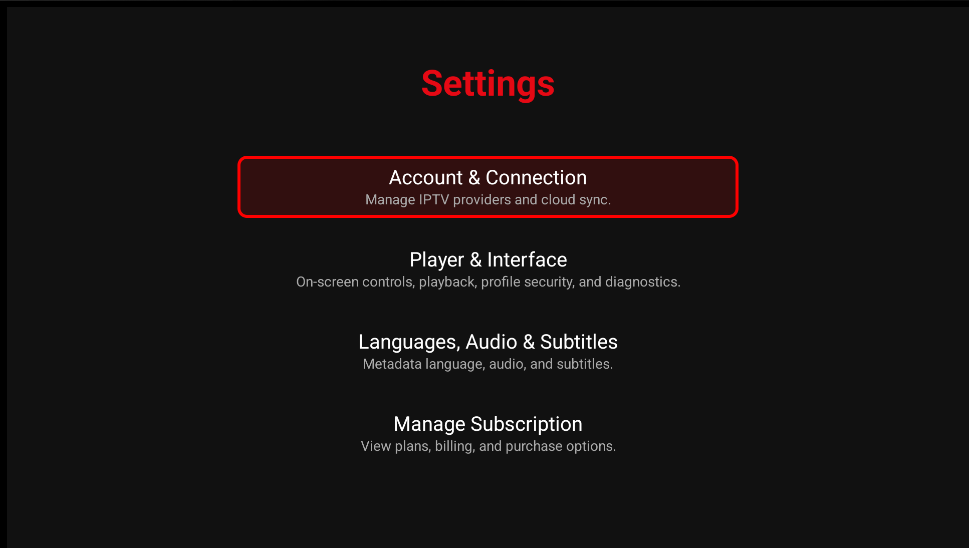
Screenshot needed: 08-settings-menu.png'">| Menu | What it contains |
|---|---|
| Accounts & Connections | IPTV providers, Gemini AI, Google Drive |
| Playback & Live TV | Player, network, Live TV & EPG, audio |
| UI & Languages | Subtitles, on-screen controls, app and metadata language |
| Profile & System | Parental PIN, ratings, diagnostics |
Accounts & Connections
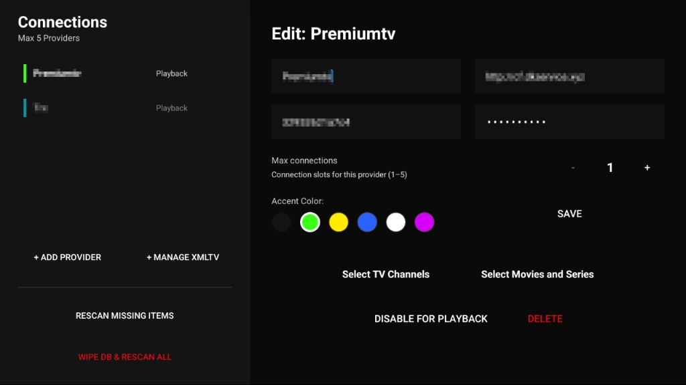
Screenshot needed: 09-settings-account.png- IPTV Providers — add up to 5 Xtream accounts (QR from phone or type on TV). Per provider: Test, Save, Select Movies and Series, Select TV Channels, max connections, and enable/disable playback for this profile.
- + Manage XMLTV (on the provider screen) — EPG source status, refresh all guides now, and up to 3 custom XMLTV lists shared by the whole household.
- Gemini AI — API key for suggestions and natural-language search (primary profile). Can be skipped.
- Google Drive — Cloud Sync backup between TVs (primary profile).
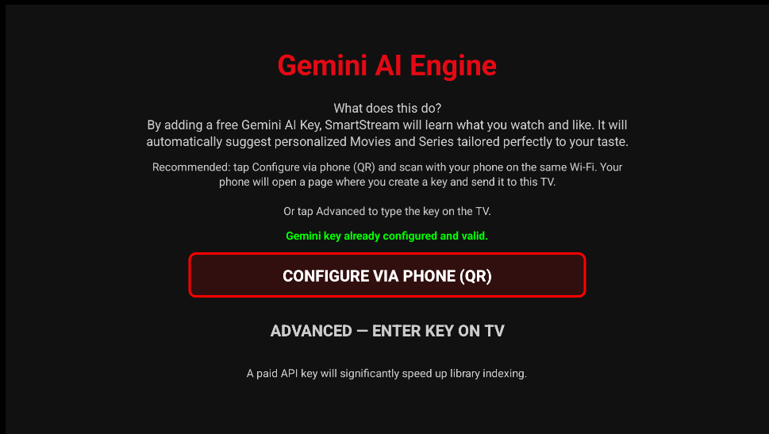
Screenshot needed: 15-ai-gemini-settings.png'">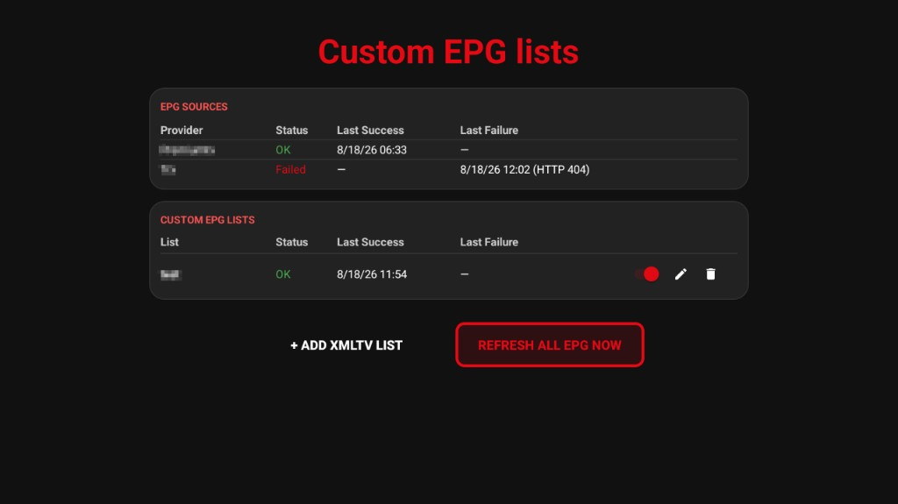
Screenshot needed: 33-custom-epg-xmltv.png'">Playback & Live TV
Player & Network
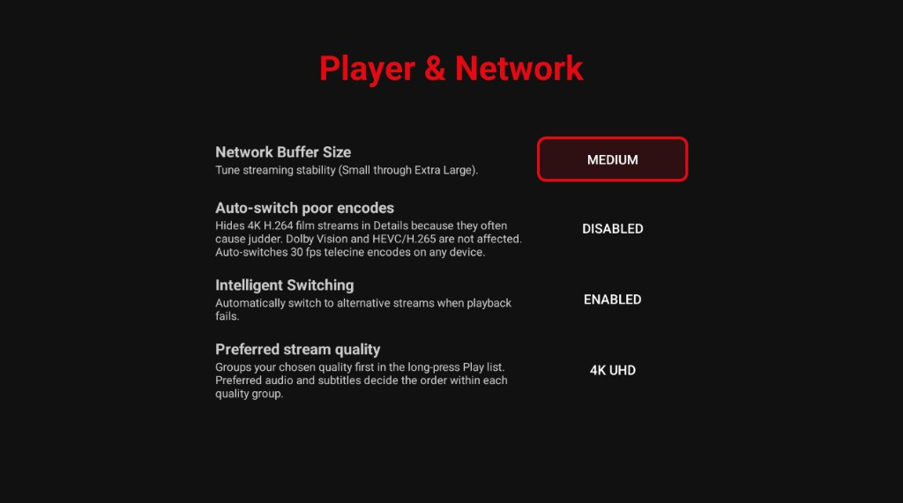
Screenshot needed: 29-settings-playback-livetv.png'">- Network Buffer Size — Small through Extra Large. Larger is more stable on slow networks; smaller starts faster.
- Auto-switch poor encodes — hides 4K H.264 film streams in Details (they often judder). Dolby Vision and HEVC/H.265 are not affected. Also auto-switches 30 fps telecine encodes.
- Intelligent Switching — automatically try another stream when playback fails.
- Preferred stream quality — puts your chosen quality first in the long-press Play list (for example 4K UHD).
Live TV & EPG
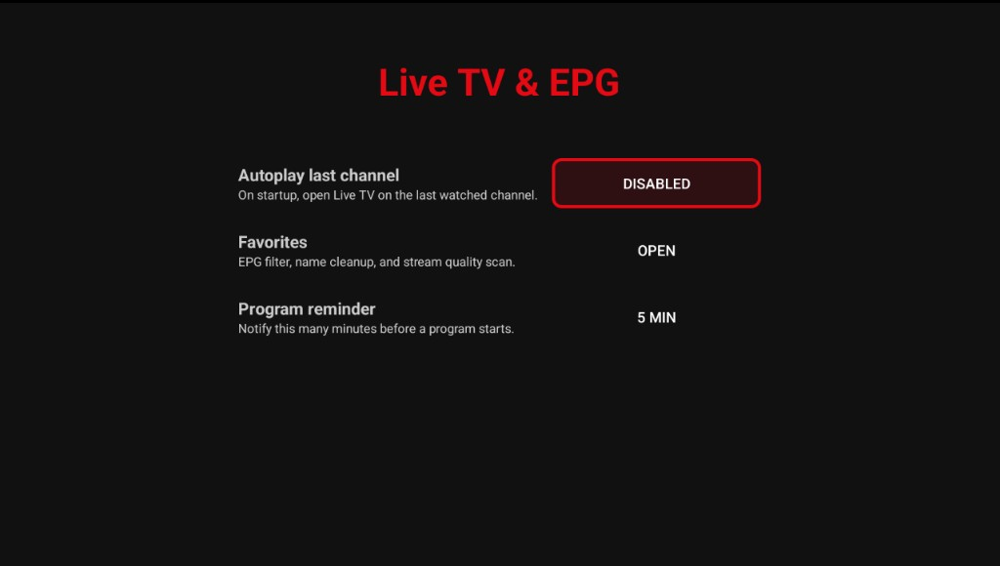
Screenshot needed: 30-settings-live-tv-epg.png'">- Autoplay last channel — when you start the app, open Live TV on the last watched channel.
- Program reminder — how many minutes before a programme start to notify you.
Favorites
Opens extra Live TV options:
- EPG sidebar — All TV folders, Favorite Channels, or Favorite Channels & PPV.
- Auto clean channel names in favorites — strip prefixes/suffixes from favorite names.
- Link stream to favorites — find backup streams on other providers for favorite channels.
- Scan favorites — Missing or All: detect video/audio quality for favorites that have several streams.
Audio
- Preferred language — first audio track when available.
- Fallback language — used if the preferred track is missing.
- HDMI Passthrough (Bitstream) — send Dolby/DTS unchanged to your sound system.
UI & Languages
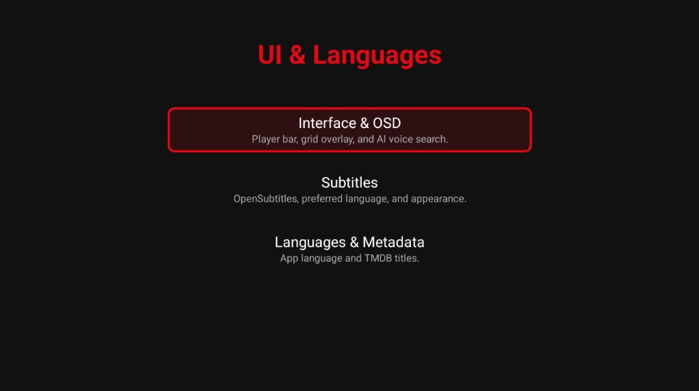
Screenshot needed: 31-settings-ui-languages.png'">Subtitles
- Configure OpenSubtitles — optional account for online subtitles.
- Preferred subtitle language — default language, fallback language, and Prioritize SDH subtitles (for hearing-impaired viewers).
- Subtitle Appearance — font, size, colour, and position on screen.
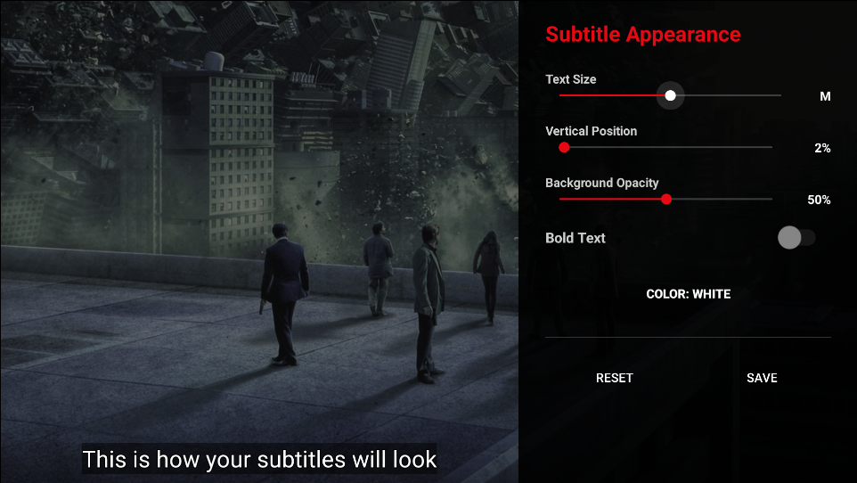
Screenshot needed: 20-subtitle-settings.png'">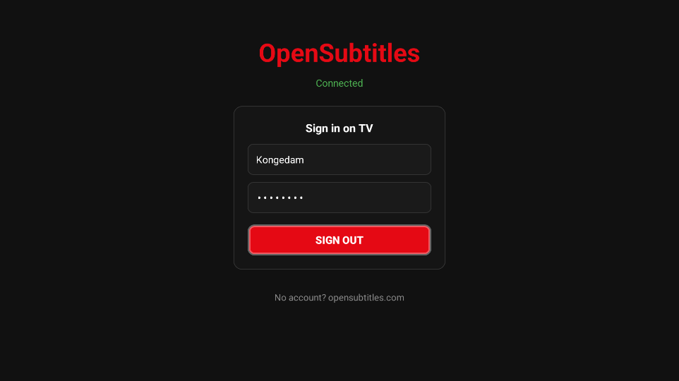
Screenshot needed: 21-opensubtitles.png'">Interface & OSD
- Playback bar auto-hide delay — how long the control bar stays visible (or Off).
- Show Grid Overlay — on-screen grid while browsing.
- AI voice search — show the microphone in search for natural-language queries (needs Gemini).
Languages & Metadata
- UI Translation — app interface language.
- Metadata Language (TMDB) — language for titles and descriptions from TMDB (primary profile).
Profile & System
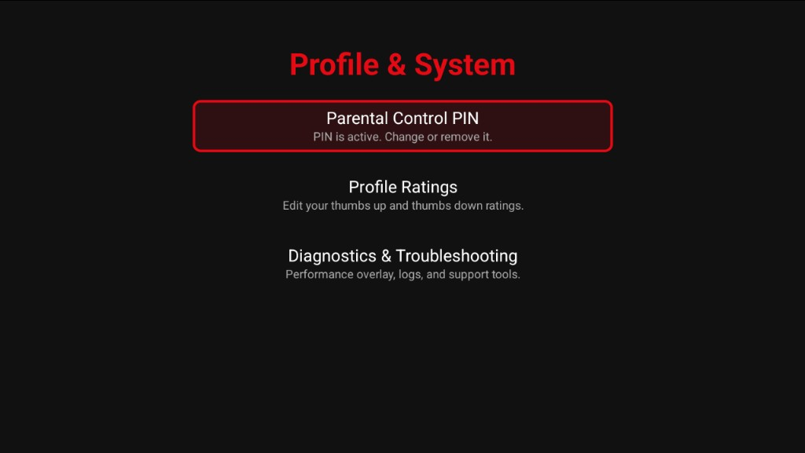
Screenshot needed: 32-settings-profile-system.png'">- Parental Control PIN — create, change, or remove the PIN that locks adult folders (hidden on kids profiles).
- Profile Ratings — review or remove 👍 / 👎 for this profile.
- Diagnostics & Troubleshooting — system and provider status, performance overlay, and Send logs via QR for support.
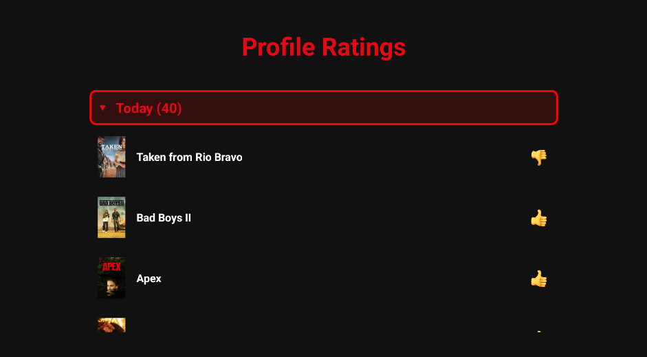
Screenshot needed: 24-settings-ratings.png'">